Al je antwoorden worden gewist en je begint opnieuw. Weet je het zeker?
Jouw resultaten
Bouw en Bewegen · 2e Toetsmoment 2016‑2017
—
/ 53
0
Goed
0
Fout
0
Niet beantwoord
Vraag 1
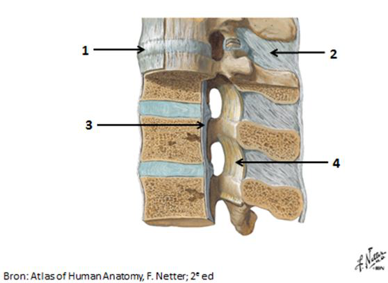
Welke ligamenten van de wervelkolom zijn met de nummers aangeduid? Kies het juiste ligament bij elk nummer.
Sleep een optie naar de bijbehorende rij, of tik eerst op een kaart en dan op een rij.
Nummer 1
Sleep hier naartoe
Nummer 2
Sleep hier naartoe
Nummer 3
Sleep hier naartoe
Nummer 4
Sleep hier naartoe
Vraag 2
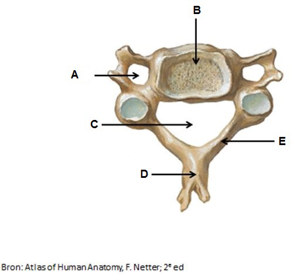
Benoem de aangeduide onderdelen van de wervel.
Sleep een optie naar de bijbehorende rij, of tik eerst op een kaart en dan op een rij.
A
Sleep hier naartoe
B
Sleep hier naartoe
C
Sleep hier naartoe
D
Sleep hier naartoe
E
Sleep hier naartoe
Vraag 3
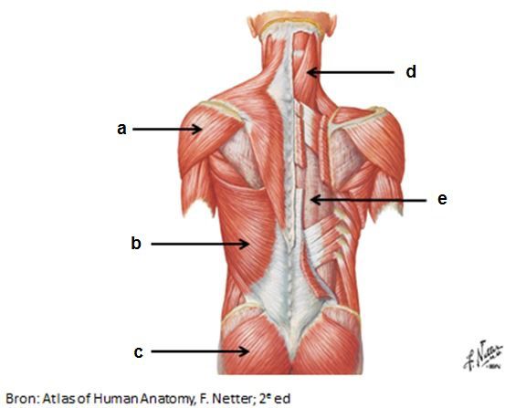
Benoem de in de afbeelding aangeduide spieren.
Sleep een optie naar de bijbehorende rij, of tik eerst op een kaart en dan op een rij.
a
Sleep hier naartoe
b
Sleep hier naartoe
c
Sleep hier naartoe
d
Sleep hier naartoe
e
Sleep hier naartoe
Vraag 4
Welke structuur is gelegen in de volgende openingen of kanalen? Kies het meest juiste antwoord. (NB: hetzelfde antwoord kan bij meerdere openingen gebruikt worden.)
foramen vertebrale
foramen transversarium
canalis vertebralis
foramen intervertebrale
Vraag 5
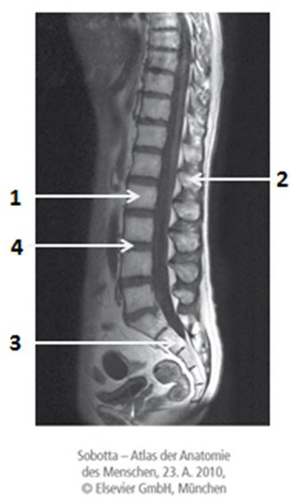
Kies de juiste alternatieven.
De afbeelding laat een beeld zien van een wervelkolom in een doorsnede, waarbij de discus intervertebralis is aangeduid met en het os sacrum met .
Vraag 6
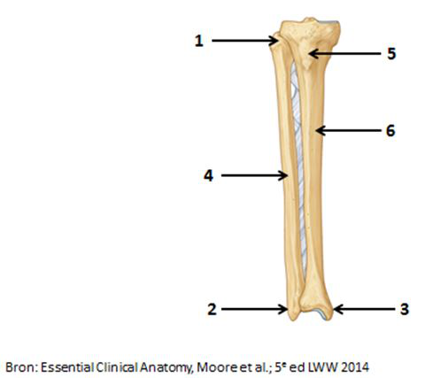
Met welke nummers worden de volgende structuren aangeduid?
Sleep een optie naar de bijbehorende rij, of tik eerst op een kaart en dan op een rij.
tuberositas tibiae
Sleep hier naartoe
caput fibulae
Sleep hier naartoe
mediale malleolus
Sleep hier naartoe
laterale malleolus
Sleep hier naartoe
Vraag 7
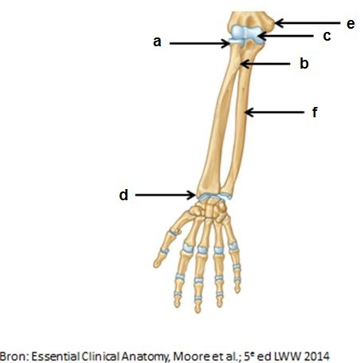
Met welke letters worden de volgende structuren aangeduid?
Sleep een optie naar de bijbehorende rij, of tik eerst op een kaart en dan op een rij.
processus styloideus radii
Sleep hier naartoe
trochlea
Sleep hier naartoe
epicondylus medialis
Sleep hier naartoe
caput radii
Sleep hier naartoe
Vraag 8
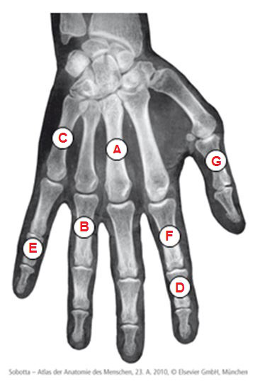
Met welke letters worden de volgende structuren aangeduid?
Sleep een optie naar de bijbehorende rij, of tik eerst op een kaart en dan op een rij.
os metacarpale III
Sleep hier naartoe
phalanx media digitus V
Sleep hier naartoe
phalanx proximalis digitus II
Sleep hier naartoe
Vraag 9
Welke twee afwijkingen zijn op deze Röntgenfoto van de schouder te zien?
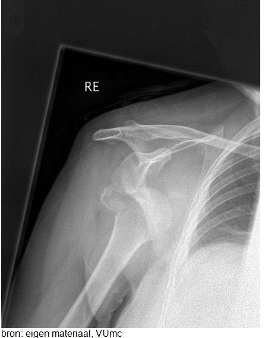
Meerdere antwoorden mogelijk.
Vraag 10
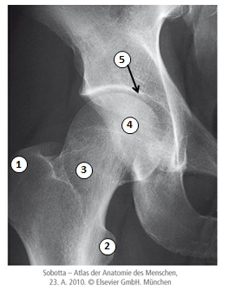
Met welke nummers zijn de volgende structuren aangeduid?
Sleep een optie naar de bijbehorende rij, of tik eerst op een kaart en dan op een rij.
acetabulum
Sleep hier naartoe
caput femoris
Sleep hier naartoe
trochanter minor
Sleep hier naartoe
trochanter major
Sleep hier naartoe
collum femoris
Sleep hier naartoe
Vraag 11
Tot welk type synoviaal gewricht wordt het schoudergewricht (articulatio glenohumeralis) gerekend?
Vraag 12
Welke bewegingen zijn er mogelijk in het (samengestelde) ellebooggewricht (articulationes humeroradialis, humero-ulnaris en radio-ulnaris proximalis)? Kies alle juiste antwoorden.
Meerdere antwoorden mogelijk.
Vraag 13
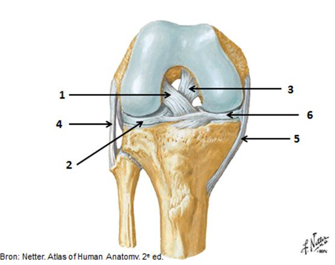
Met welke nummers worden de volgende structuren aangeduid?
Sleep een optie naar de bijbehorende rij, of tik eerst op een kaart en dan op een rij.
mediale meniscus
Sleep hier naartoe
ligamentum collaterale laterale
Sleep hier naartoe
voorste kruisband
Sleep hier naartoe
Vraag 14
Tot welk soort gewricht behoren onderstaande gewrichten?
Sleep een optie naar de bijbehorende rij, of tik eerst op een kaart en dan op een rij.
articulatio acromioclavicularis
Sleep hier naartoe
membrana interossea antebrachii (syndesmosis)
Sleep hier naartoe
epifysairschijf (synchondrosis)
Sleep hier naartoe
Vraag 15
Uit welke twee bloedvaten ontspringen de articulaire arteriën die specifiek het polsgewricht vasculariseren?
Meerdere antwoorden mogelijk.
Vraag 16
Door welke zenuw wordt de spiergroep primair geïnnerveerd?
Sleep een optie naar de bijbehorende rij, of tik eerst op een kaart en dan op een rij.
dorsale bovenarmspieren
Sleep hier naartoe
intrinsieke handspieren
Sleep hier naartoe
ventrale onderarmspieren
Sleep hier naartoe
Vraag 17
Door welke zenuw wordt de spiergroep primair geïnnerveerd? (NB: hetzelfde antwoord kan meerdere keren gekozen worden.)
diep dorsale onderbeenspieren
dorsale bovenbeenspieren
ventrale bovenbeenspieren
Vraag 18
Kies de juiste alternatieven.
Welke twee structuren passeren in de voorste scalenuspoort en welke twee in de achterste scalenuspoort? Voorste scalenuspoort: en . Achterste scalenuspoort: en .
Vraag 19
Een patiënt presenteert zich met een proximale humerusschachtfractuur. U bent alert op letsel aan een specifieke zenuw. Welk lichamelijk onderzoek voert u in elk geval uit om de functionaliteit van deze zenuw te onderzoeken?
Vraag 20
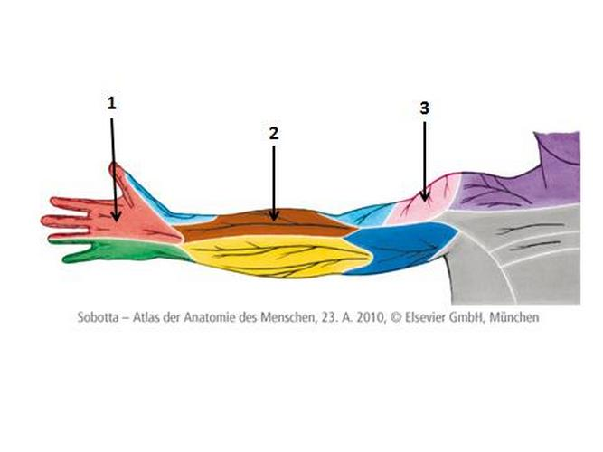
Uit welke zenuw ontspringen de huidzenuwen die de met nummers aangeduide huidgebieden verzorgen?
Sleep een optie naar de bijbehorende rij, of tik eerst op een kaart en dan op een rij.
Nummer 1
Sleep hier naartoe
Nummer 2
Sleep hier naartoe
Nummer 3
Sleep hier naartoe
Vraag 21
Benoem de hoofdfunctie van de spieren. (NB: hetzelfde antwoord kan meerdere keren gekozen worden.)
m. biceps brachii
m. brachioradialis
m. deltoideus
Vraag 22
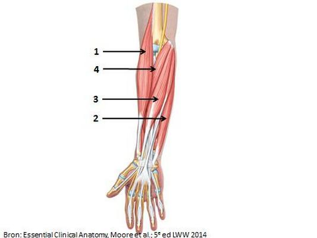
Met welk nummer worden de spieren aangeduid?
Sleep een optie naar de bijbehorende rij, of tik eerst op een kaart en dan op een rij.
m. flexor carpi radialis
Sleep hier naartoe
m. flexor carpi ulnaris
Sleep hier naartoe
m. pronator teres
Sleep hier naartoe
Vraag 23
Benoem de hoofdfunctie van de spieren.
Sleep een optie naar de bijbehorende rij, of tik eerst op een kaart en dan op een rij.
m. gastrocnemius
Sleep hier naartoe
m. semitendinosus
Sleep hier naartoe
m. tibialis anterior
Sleep hier naartoe
Vraag 24
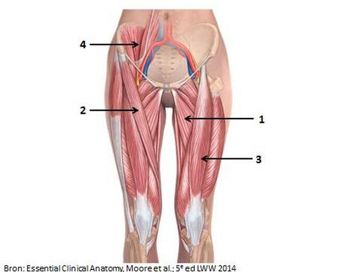
Welke spieren worden met de nummers aangeduid?
Sleep een optie naar de bijbehorende rij, of tik eerst op een kaart en dan op een rij.
Nummer 1
Sleep hier naartoe
Nummer 2
Sleep hier naartoe
Nummer 3
Sleep hier naartoe
Nummer 4
Sleep hier naartoe
Vraag 25
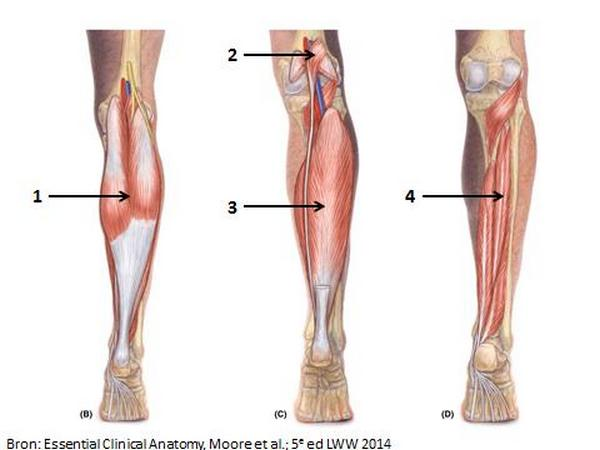
Met welk nummer worden de spieren aangeduid?
Sleep een optie naar de bijbehorende rij, of tik eerst op een kaart en dan op een rij.
Nummer 1
Sleep hier naartoe
Nummer 2
Sleep hier naartoe
Nummer 3
Sleep hier naartoe
Nummer 4
Sleep hier naartoe
Vraag 26
Een patiënt presenteert zich met een arteriële afsluiting door ernstige atherosclerose (slagaderverkalking) van de a. femoralis net boven de knie. Er wordt besloten een angiogram te maken. Van welke twee arteriën verwacht u op basis van deze afsluiting verminderde doorbloeding te zien?
Meerdere antwoorden mogelijk.
Vraag 27
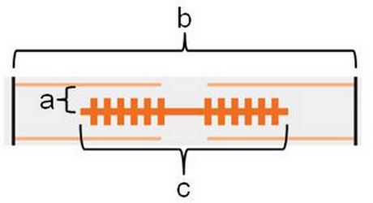
Deze schematische figuur toont een sarcomeer. Zet de juiste afstand bij de letter.
Sleep een optie naar de bijbehorende rij, of tik eerst op een kaart en dan op een rij.
A
Sleep hier naartoe
B
Sleep hier naartoe
C
Sleep hier naartoe
Vraag 28
Wat is een motor unit?
Vraag 29
Bekijk de afbeelding beneden. Deze toont een dwarsdoorsnede van een myofibril. Deze myofibril is doorgesneden op welke hoogte?
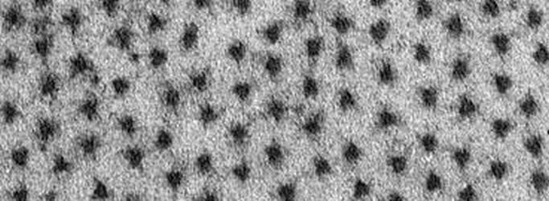
Vraag 30
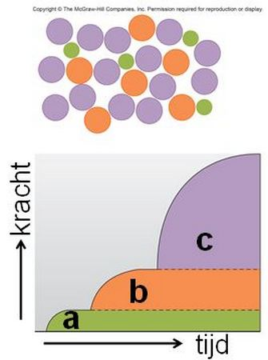
De bovenste figuur toont een schematische dwarsdoorsnede van een skeletspier met 3 motor-unit types; de onderste figuur toont de krachtgeneratie als gevolg van het recruteren van deze 3 motor-unit types. Zet het juiste motor-unit type bij de letter.
Sleep een optie naar de bijbehorende rij, of tik eerst op een kaart en dan op een rij.
a
Sleep hier naartoe
b
Sleep hier naartoe
c
Sleep hier naartoe
Vraag 31
Zet deze stappen van de excitatie-contractiekoppeling in skeletspier in de juiste volgorde.
Sleep een optie naar de bijbehorende rij, of tik eerst op een kaart en dan op een rij.
Stap 1
Sleep hier naartoe
Stap 2
Sleep hier naartoe
Stap 3
Sleep hier naartoe
Stap 4
Sleep hier naartoe
Vraag 32
Kies de juiste alternatieven.
Snelle-glycolytische skeletspiervezels (type IIb) zijn , hebben mitochondria en een myosine-ATPase activiteit.
Vraag 33
Een patiënt heeft een myopathie waardoor de dunne filamenten van de sarcomeer korter zijn dan normaal. Hoe beïnvloedt dit de kracht-lengterelatie van spieren? Deze relatie:
Vraag 34
Deze figuur toont drie condities van een skeletspier. De getoonde actiepotentialen zijn afkomstig van een:
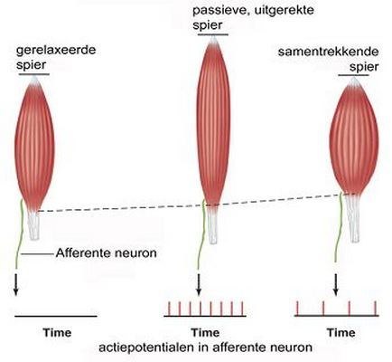
Vraag 35
Welk type spierweefsel wordt in de figuur weergegeven?
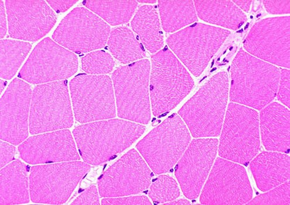
Vraag 36
Welk van de onderstaande beweringen is typerend voor dwarsgestreept skeletspierweefsel? Dwarsgestreept skeletspierweefsel:
Vraag 37
Reticulair bindweefsel is een bijzondere variant van losmazig bindweefsel en vinden we terug in:
Vraag 38
U ziet hier een doorsnede door een zeer zeldzame goedaardige tumor: een hibernoom. Uitgaande van het histologische beeld kunt u opmaken dat een hibernoom voornamelijk is opgebouwd uit:
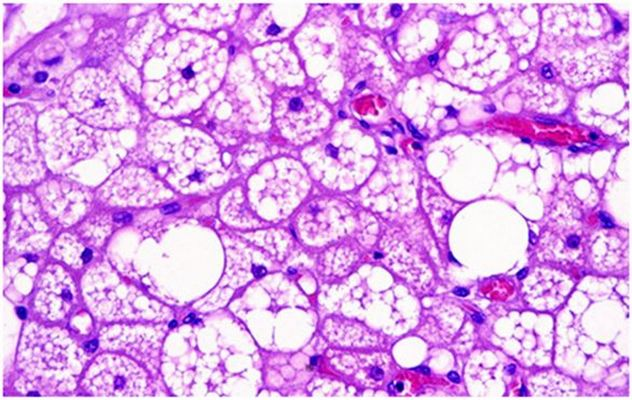
Vraag 39
Kies de juiste alternatieven.
Osteoblasten worden gevormd vanuit en produceren bij herstel van botfracturen eerst bot.
Vraag 40
De lange pijpbeenderen, zoals de humerus, worden opgebouwd in diverse fasen. Plaats onderstaande fasen in de juiste volgorde.
Sleep een optie naar de bijbehorende rij, of tik eerst op een kaart en dan op een rij.
Fase 1
Sleep hier naartoe
Fase 2
Sleep hier naartoe
Fase 3
Sleep hier naartoe
Fase 4
Sleep hier naartoe
Vraag 41
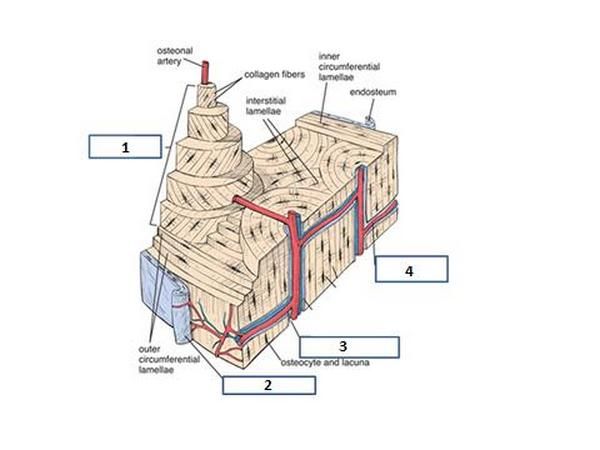
U ziet hier een schematische weergave van botweefsel. Welke onderdelen van botweefsel worden met de nummers aangeduid?
Sleep een optie naar de bijbehorende rij, of tik eerst op een kaart en dan op een rij.
Nummer 1
Sleep hier naartoe
Nummer 2
Sleep hier naartoe
Nummer 3
Sleep hier naartoe
Nummer 4
Sleep hier naartoe
Vraag 42
Welk van de onderstaande beweringen is typerend voor gewrichtskraakbeen? Gewrichtskraakbeen:
Vraag 43
Een 64-jarige man heeft sinds enkele dagen lage rugpijn. De pijn is plotseling ontstaan en straalt uit naar zijn bovenbeen links; hij heeft het idee dat het bovenbeen ook wat dover voelt. Er is geen sprake van een trauma en hij heeft dit nooit eerder gehad. De voorgeschiedenis vermeldt astma waarvoor hij, met name in zijn jeugd, vaak ernstige exacerbaties doormaakte; hij gebruikt hier al jaren corticosteroïden voor. De arts probeert te differentiëren tussen een hernia nuclei pulposi (HNP) en een osteoporotische inzakkingsfractuur. Welke kenmerken horen het meest bij welke diagnose gezien deze casus?
leeftijd
sensibele stoornissen
uitstraling
voorgeschiedenis
Vraag 44
Een 55-jarige vrouw komt op het spreekuur van de huisarts in verband met sinds 9 weken bestaande lage rugpijn. Ze vertelt dat met name bukken meer pijn geeft en dat ze de pijn dan voelt uitstralen naar het rechter been tot voorbij de knie. Daarnaast vertelt ze dat diclofenac (NSAID) goed helpt tegen de pijn. Ze heeft twee jaar geleden een oogontsteking doorgemaakt.
Wat is op dit moment de meest waarschijnlijke diagnose?
Vraag 45
Over het parathormoon (PTH) en zijn functies valt veel te zeggen. Welke van de onderstaande uitspraken is juist (1 uitspraak is juist)?
Vraag 46
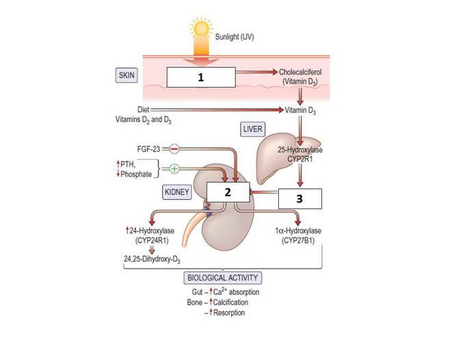
Welke stof hoort op welke plaats te staan in dit schema van de vitamine D-huishouding?
Sleep een optie naar de bijbehorende rij, of tik eerst op een kaart en dan op een rij.
Nummer 1
Sleep hier naartoe
Nummer 2
Sleep hier naartoe
Nummer 3
Sleep hier naartoe
Vraag 47
Kies de juiste alternatieven.
De gewrichtsvloeistof van het kniegewricht heeft een lange transversale relaxatietijd T2, een kruisband een korte T2. Op een T2-gewogen MRI-opname (lange echotijd; hoge signaalintensiteit = 'licht', lage = 'donker') is de gewrichtsvloeistof en de kruisband afgebeeld.
Vraag 48
Bij patiënten met jicht (Engels: gout) is er in het algemeen een te hoge weefsel- en serumconcentratie van:
Vraag 49
Kies de juiste alternatieven.
Heberden noduli zijn gelokaliseerd in de en worden veroorzaakt door .
Vraag 50
Wat past het beste bij het spontane verloop van de ziekte van Paget (osteitis deformans)?
Vraag 51
Een jongeman raakt betrokken bij een eenzijdig verkeersongeval. Bij onderzoek op de spoedeisende hulp blijkt er een fractuur van de tibia. Er zijn meerdere fractuurdelen, de huid is intact. Hoe noemt men deze fractuur?
Vraag 52
Plaats de verschillende kenmerken of symptomen bij de juiste aandoening.
claudicatio intermittens
enkel-arm index kleiner dan 0,8
varices
tweezijdig enkeloedeem
zwangerschap
gezwollen pijnlijke kuit
Vraag 53
Een vrouw van 45 jaar komt bij de huisarts op het spreekuur. Ze heeft sinds enkele maanden in toenemende mate last van moeheid en pijn in verschillende gewrichten. De huisarts vermoedt mogelijke reumatoïde artritis (RA). Welke van onderstaande punten zijn, gezien het vermoeden op RA, het meest relevant om bij de patiënt na te vragen? Vink er twee aan.